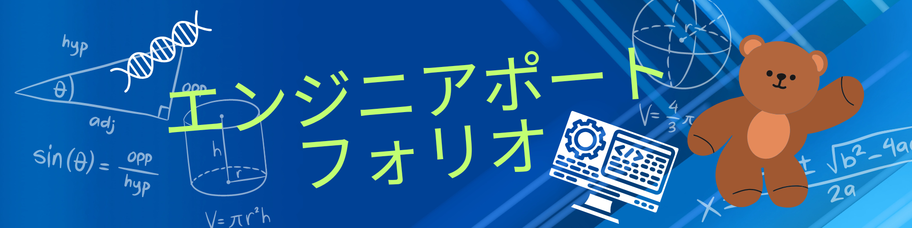

使う事ができるツール
python

javascript


名城大学生物資源学科3年 210561109 大鐘 斐斗です！！！！
大学では分子情報生物学研究室でpythonをもちいたＤＮＡのデータ解析などのdryな操作や
大腸菌の形質転換などのwetな実験まで様々な事を行っています。さらにボランティア協議会というサークルで副代表をしており
障がい者の方の介護や高齢者施設などでのレクリエーションのお手伝い,大学付近のゴミ掃除など様々な事を行っています。
加えて河川掃除などを行い,環境問題を解決したいという思いでseawaseという学生団体を立ち上げました。
詳しい活動は下のＵＲＬのホームページから御覧下さい！！！
tensorflowとmnistデータをもちいて手書き数字を認識するプログラムを作成しました！下のURL
から僕が作成したプログラムを実行することができます！
手書き数字認識Google apps script とLINEDEVELOPERの機能を用いて簡単な応答ができるbotやchatgptをオープンAPIキーをもちいてline上で実行
できるようなbotを作成しました！作成したLINEBOTのQRコードを下に記載しておきます。
ChatGpt
LINEBOT